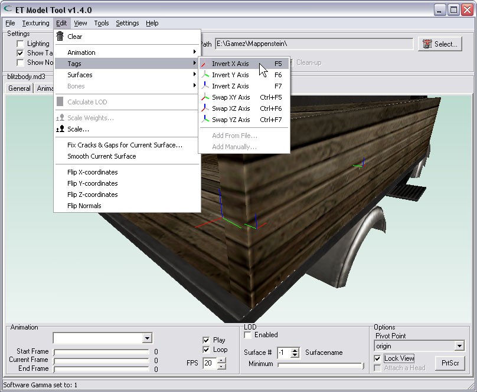
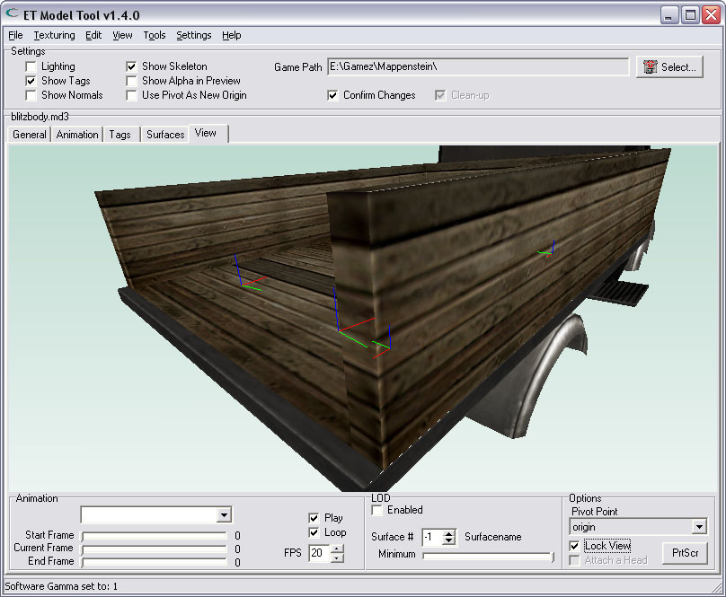
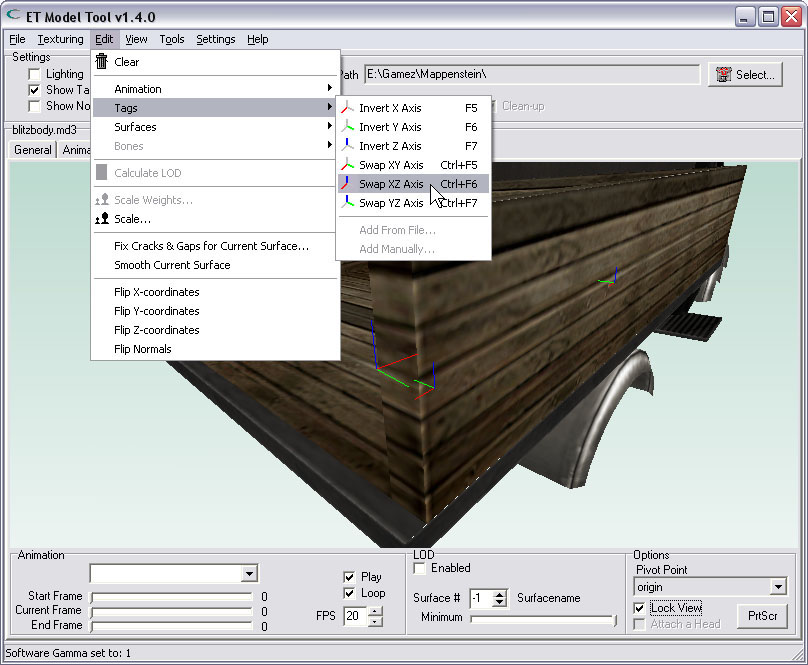

| Manipulating tag-axis | |
| Tags are for attaching other entities to a model. The tag has a position and a direction. The position is not so hard to figure out for anyone, it is the point where the 3 axis intersect. The direction of a tag is given by the angles of the 3 axis. The 3 axis, named X- Y- & Z-axis, are respectively coloured Red, Green & Blue. In other words, the red line points in the direction of the (positive) X-axis, the green line points into a direction along the (positive) Y-axis and the blue line points indicates the (positive) Z-axis. If You rotate the direction of a tag in a model, any attached entity will also be rotated the same way. With this tool You can invert one tag-axis, or swap 2 tag-axis. I've loaded the ET-model of a truck: blitzbody.md3, which has 4 tags in the model. The image below shows the back of the truck where the 2 objectives are attached: | |
| Inverting an axis of a tag | |
| By selecting the choice from the menu, You can invert one of the three axis. When You choose to invert the X-axis, the red line will flip direction. | |
|  | |
| The result of the invert: | |
|  | |
| Swapping tag-axis | |
| It is also possible to swap 2 tag-axis. Just select the proper choice from the menu. If You swap the X- & Z-axis, the red & blue lines will flip. | |
|  | |
| The result of the swapping of 2 tag-axis: | |